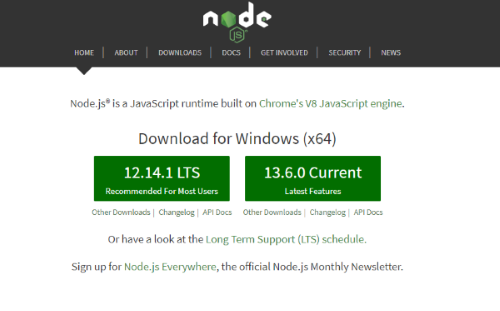

<div class="content-overview">
  <div class="inner-style">
    <h2 class="content-heading"><span class="style-scope ">3</span>. <span
        class="style-scope google-codelab-step">Getting set up</span></h2>
    <div>To set up our development environment, the very first step would be to Download and install Node.
      To install node, go to <a href="https://nodejs.org/" target="_blank">https://nodejs.org/</a>. This will
      include the node package manager, <code>npm</code>.</div>
    <div style="text-align: center; padding: 8px;">
    </div>
    <div> Check the version of node and npm to be sure these are installed successfully. This can be done using
      <br><br>
      <div class="content-tag"><code class="icon-code-style">node -version</code></div> <br>and<br><br> <span
        class="content-tag"><code class="icon-code-style">npm -version</code></span>
    </div><br>
    <div>Install Angular CLI as the next step to be able to create an Angular project. To install CLI, use <br><br>
      <code class="icon-code-style content-tag"> npm install @angular/cli@latest</code>
      <br><br>
      <div> Check the version of CLI
        using <code class="icon-code-style content-tag">ng version</code> or <code
          class="icon-code-style content-tag">ng v</code>.</div>
    </div>
    <div style=" padding: 8px;"></div>
    <br>
    <div>With this set up, we are ready to proceed with using Angular elements to create a web component in Angular.
    </div><br>
    <div style="background-color: darkgray; padding: 12px;">
      <div style="font-size: 18px; color: black;">But before that, let us have a brief understanding of web standards
        and Angular elements in general
        first. Most of the setup related to using Angular elements, polyfills etc. will be done in the upcoming
        sections.</div>
    </div>
  </div>
</div>